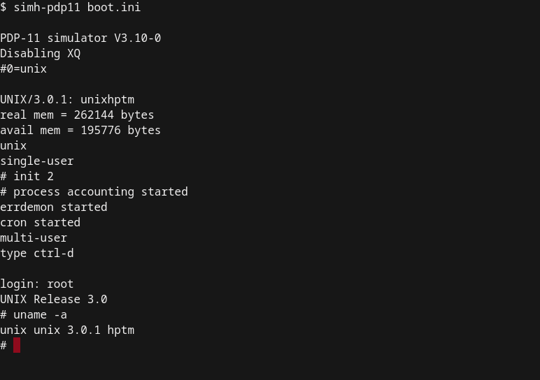
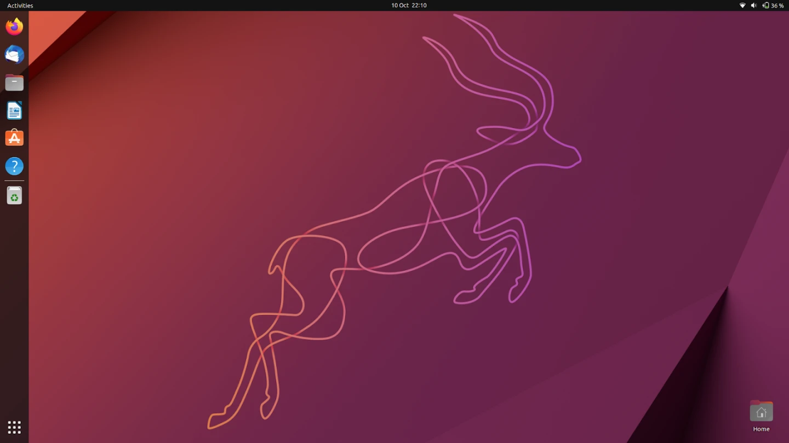
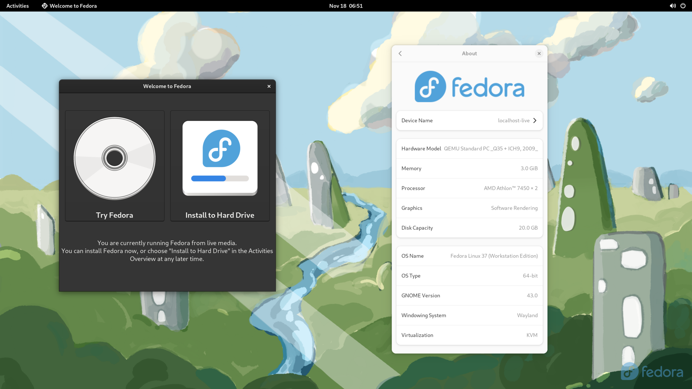
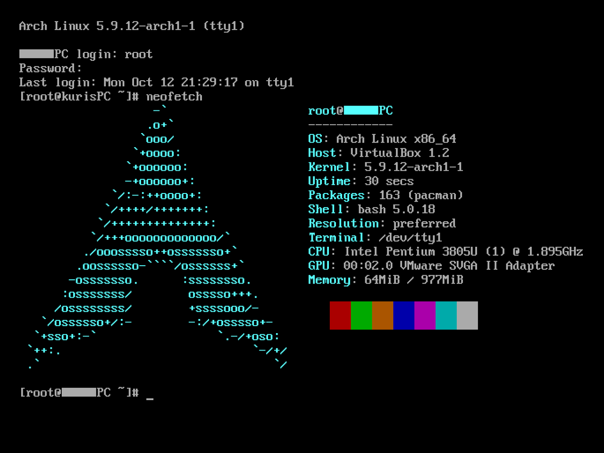

Unix, the predecessor of Linux

Debian, the first mainstream Linux distribution

Ubuntu, the most widespread Linux distribution

Fedora, Torvalds' favourite

Arch Linux
One of the advantages and also disadvantages of Arch Linux is its lack of a preinstalled window manager, which you then have to install by yourself. This is how Arch Linux will look if you won't install a WM, just a terminal.